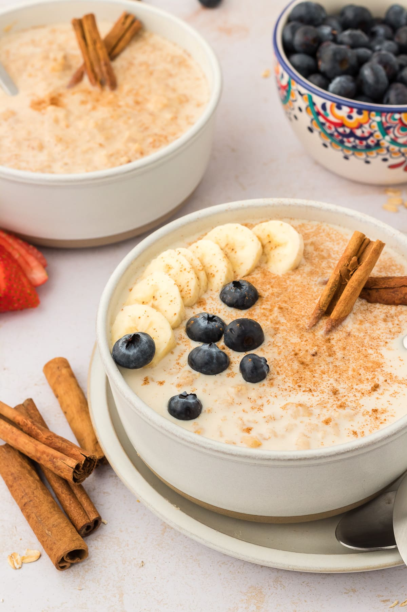

Mexican Oatmeal

Description
Heartwarming delicious oatmeal perfect for a meal at anytime of the day!
Ingredients
- 1 cup water
- 1 Mexican cinnammon stick
- 1/2 cup quick-cookng oats
- 1/2 cup milk
- 1 tablespoon piloncillo, or to taste
- 1/2 teaspoon ground cinnamon
- 1/2 teaspoon vanilla extract
Steps
- Bring water and cinnamon stick to boil in a saucepan
- Reduce heat and simmer for 5 minutes
- Add oats and cook for 1 minute
- Add milk and cook until thickened, 1 or 2 minutes
- Remove from heat and stir in piloncillo, cinnamon, and vanilla